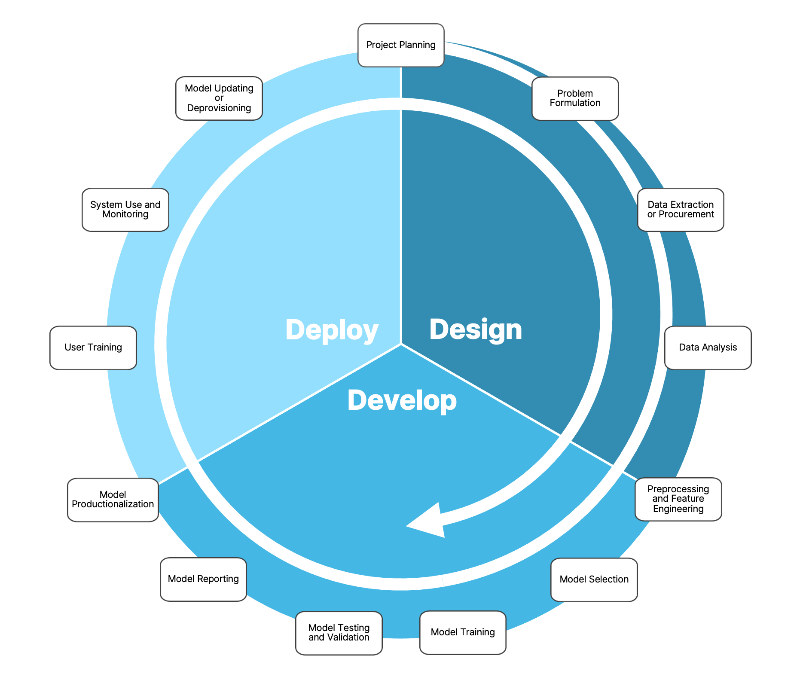
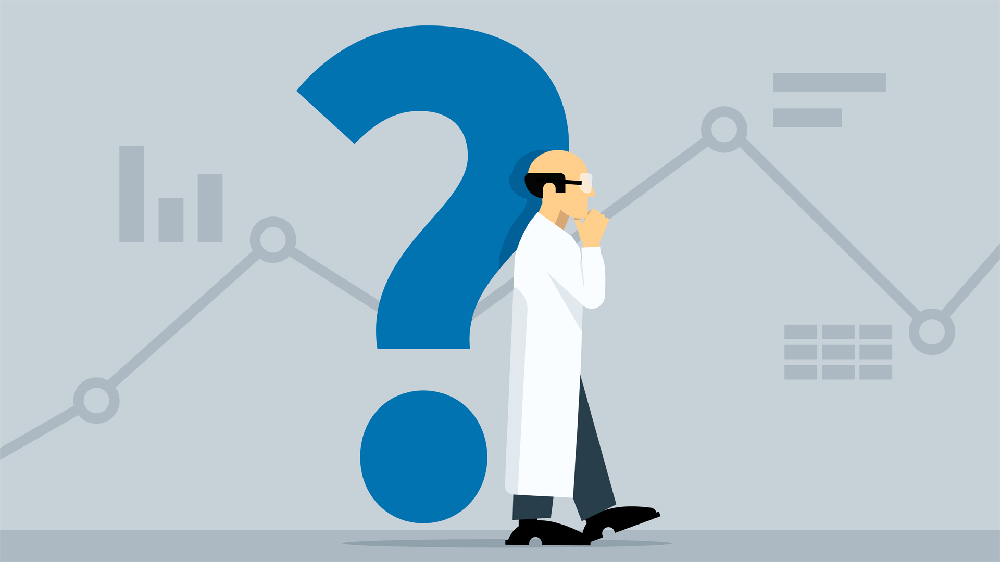
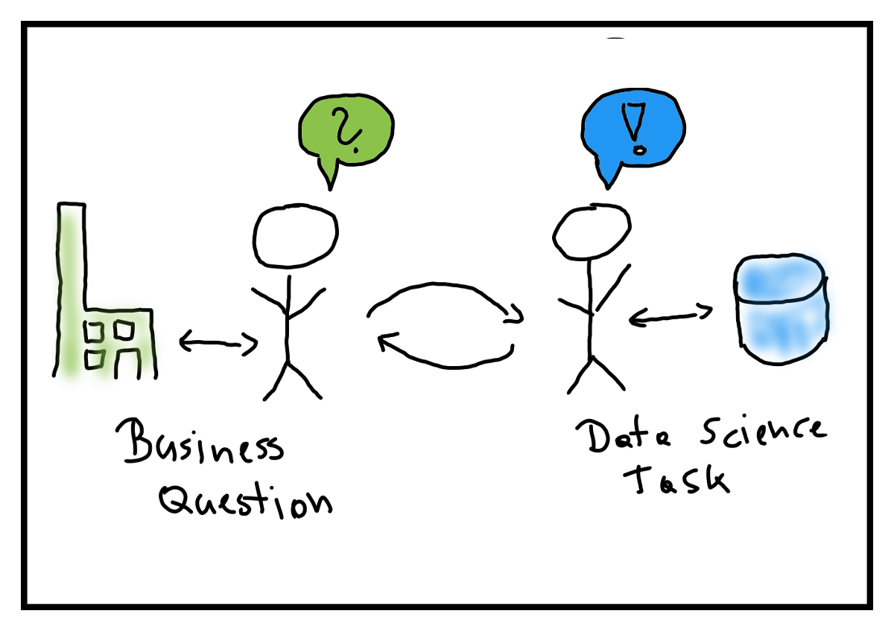
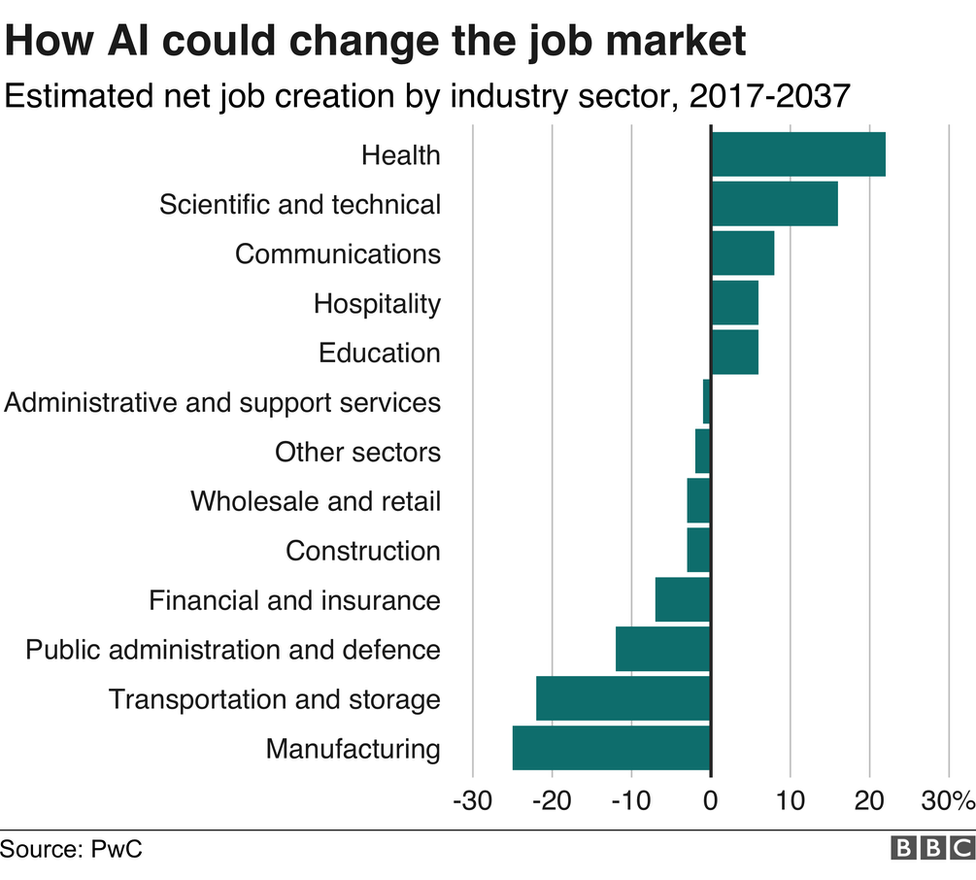
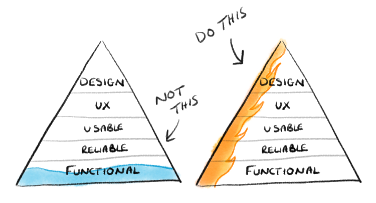
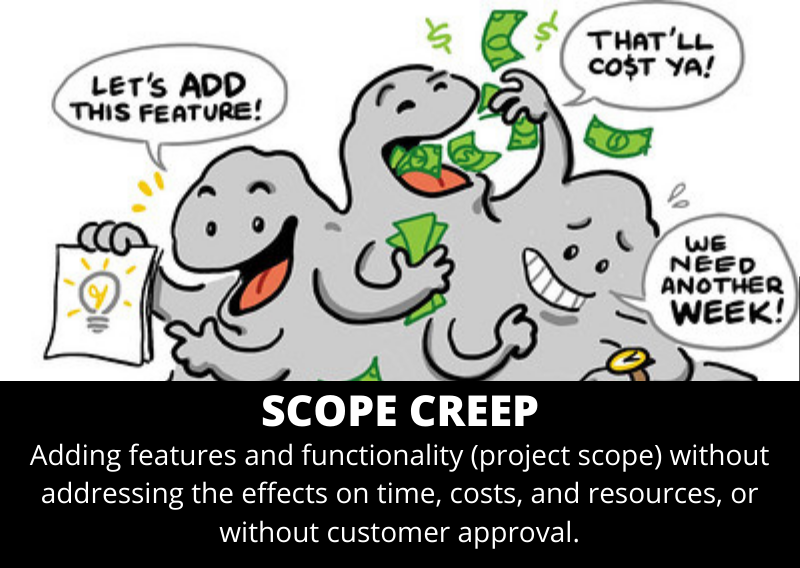
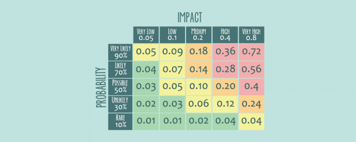
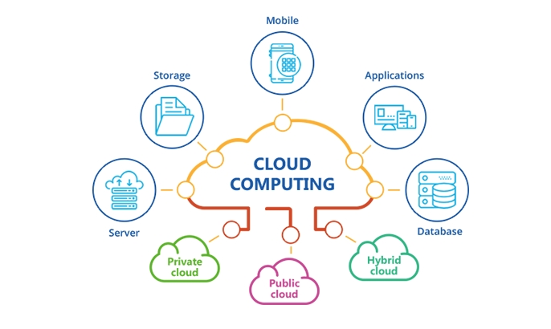

1.2 Research Data Science project lifecycle¶
Data science projects in research environments comprise multiple stages, each of which has its own complexities. Data science projects require careful planning and scoping to minimise issues later on.
In this lesson we:
Go through the stages of a typical research data science project.
Focus on the problem formulation and scoping stages, listing a number of questions teams should ask themselves when going through them.
Highlight common hurdles and challenges which might impact project direction and timelines.
Types of projects¶
There are different types of research data science projects. Their content and structure differs depending on:
Aims of the project
Show more
For example short projects that aim to enhance functionality of an existing system or large exploratory research project that aim to uncover new knowledge.
Number of people involved, their expertise and expectations
Show more
People can include data scientists, researchers, software/data engineers, data providers, domain experts, users, project managers.
Methodology used
Show more
Are we using predictive models, optimisation algorithms, visualisation tools, doing some data transformation, building a simulator, building an API or web app?
Type of data
Show more
For example offline vs. online, big vs. small, structured vs. unstructured
Setting
Show more
These can be academic, corporate, government, third sector with collaborations between multiple sectors very common especially in large projects, e.g. see Project Bluebird and Living with machines, both active Turing projects.
Project lifecycle¶
Despite this variety, there are some high level steps/stages that we encounter in most projects. A typical project lifecycle is shown in the figure below, assuming that the core methodology used involves building a model (this is the most common scenario but not the only one).
It requires years of experience to understand the ins and outs and challenges of each stage and familiarise with the end-to-end process but having an overview of the lifecycle helps prepare for this.

Design - develop - deploy¶
There are three main stages in the figure:
Design: Involves formulating the problem, planning the project, collecting the data and doing preliminary analysis.
Develop: Comprises the core work of developing and implementing the right methodology (usually some kind of model) to solve the problem and testing/reporting how well it works, in comparison for instance with a series of predefined baselines.
Deploy: Contains the steps necessary to move from a prototype implementation to a production-level system, as well as to allow adoption by the users and regular performance monitoring.
Lifecycle iteration¶
These stages initially seem sequential. But it is almost always the case that the process is iterative.
Show more
Many projects go through the lifecycle multiple times, iteratively refining the model or output.
New findings during one stage can lead to revisiting a previous stage. For example, while developing and validating the model, data scientists might realise that the available data are either not enough or not completely representative of the studied domain to train an adequate model and might decide to go back and collect/procure more data.
The same iterative process is followed within each of the three stages, with additional overlaps, e.g. problem formulation and data procurement sometimes happens in parallel.
The data scientists in the project need to have an active role in all of the stages mentioned above and to be proactive in keeping all other people involved in the discussion. For instance, data providers and domain experts will need to discuss challenges and sketch timelines in case the researchers are considering collecting more data.
Our Focus: Problem formulation, scoping and planning¶
In this lesson we will focus mostly on the first two stages of the lifecycle. We will delve into some of the remaining stages in Modules 2-4 of the course.
Project research questions can originate in different ways
Show more
As we discussed already in lesson 1.1, research data science is used to address problems, take decisions and answer questions in a data-driven way, while keeping a critical mindset. A research data science project begins with an initial question or problem. This can originate from:
A research or business leader who wants to address a particular aspect.
A domain expert who observes some issue in their day-to-day work and questions how to address it.
An informal or formal discussion between various members of a team or unit that leads to an idea.
An external client with a specific request.
The availability of a new (often large-scale) dataset in a specific research domain.

Moving from vague to well-defined requires stakeholder engagement
Show more
More often than not, the initial question at this early stage is vague and high-level. Data science teams have processes in place to move from this initial vagueness to a well-defined research question and project plan. One important first step is to include in this process all the different teams and stakeholders that are involved in the project. These might involve:
Data scientists
Researchers and/or business experts
Data engineers, software developers and Dev Ops teams
Project managers
Data providers
Potential or current users
Communities that might be involved in the project or affected by it
The public
Answering key questions
Show more
During the problem formulation and scoping phase we aim to answer a number of questions by having detailed and careful converstations with all of the stakeholders. Discussing these questions and giving clear answers is likely to require multiple meetings with all stakeholders in the project, having an open dialogue across communities, expertise and often highly different academic cultures. Therefore it needs building a welcoming and respectful environment as well as keeping careful documentation of all discussions and decisions. Negotiation between the various teams is necessary in order to narrow down the scope and agree on what could and what needs to be delivered and how. At the end of the process, we should have agreed and documented the agreed answers to all the questions.
What questions should teams ask themselves?¶
Here, we list some important questions that come in handy when talking to stakeholders and trying to scope a project.
Question 1: What is the broad problem we are trying to solve?¶
We want to understand the status quo (e.g. any existing solution or research or lack thereof) and what is missing or problematic, in other words the motivating problem behind the project.
Show examples
The Turing’s collaboration with NATS (Project Bluebird) aims to solve the following challenge:
Air traffic control (ATC) is a remarkably complex task. In the UK alone, air traffic controllers handle as many as 8,000 planes per day, issuing instructions to keep aircraft safely separated. Although the aviation industry has been hit by the pandemic, European air traffic is forecast to return to pre-pandemic levels within five years. In the long term, operations will be constrained by human performance amid rising volumes of air traffic, only to accelerate further with the introduction of unmanned aircraft systems, so next-generation ATC systems are needed to choreograph plane movements as efficiently as possible, keeping our skies safe while reducing fuel burn.
Another Turing project called QUIPP is trying to solve the following challenge:
Sensitive datasets are often too inaccessible to make the most effective use of them (for example healthcare or census micro-data). Synthetic data - artificially generated data used to replicate the statistical components of real-world data but without any identifiable information - offers an alternative. However, synthetic data is poorly understood in terms of how well it preserves the privacy of individuals on which the synthesis is based, and also of its utility (i.e. how representative of the underlying population the data are).
A third very different project, Living with Machines, is trying to solve the following challenge:
It is widely recognised that Britain was the birthplace of the world’s first industrial revolution, yet there is still much to learn about the human, social, and cultural consequences of this historical moment. Focussing on the long nineteenth century (c.1780-1918), the Living with Machines project aims to harness the combined power of massive digitised historical collections and computational analytical tools to examine the ways in which technology altered the very fabric of human existence on a hitherto unprecedented scale.

Question 2: What is the specific research question? How does it translate to a data science problem?¶
Starting from a possibly vague and broad challenge which sets the context, we want to help the researchers and domain experts clarify the scope of the project by:
Defining a specific research question
Translating the question into a well-defined data science (computational) problem that can be solved by using an algorithm.
Show examples
If we consider the case studies presented in Question 1, asking questions about the domain of the problem is a good starting point for moving from a broad challenge to a specific task. For instance:
In NATS: “How do people generally measure efficiency” could be a good starting point to move to a more specific research questions and think about the data science translation.
On Living with machines: Asking about data availability can help clarify what types of data science solutions are conceivable, e.g. “Which collections are promptly available and how representative are they?”
Choosing a data science algorithm or method.
Show more
There is a large variety of methods and algorithms that can be used to solve problems involving data. These range from supervised and unsupervised learning, dimensionality reduction and reinforcement learning to optimisation methods, visualisation techniques, synthetic data methods and many others. Data scientists are the domain experts who should be able to choose which method is suitable to answer the given problem and which one is overkill or is likely to fail. We will learn more about some of these methods during the course but being able to choose one during scoping takes practice.
 source
Important
Knowledge gaps between data scientists and collaborators/customers/researchers are common, encountered particularly in projects where data scientists collaborate with domain experts and researchers.
Domain experts have a lot of knowledge about their area but:
Often do not have a good grasp of data science methods and computing, e.g. they might not know what machine learning or other methods can and cannot do or, on the opposite, they might only know the most popular methods of the moment (e.g., deep learning toolkits).
Might not be able to translate what they want to a list of technical requirements and a plan to deliver the output:
Might not understand how much time the technical work is likely to take.
Research data scientists have an understanding of data and analytics but:
Often are strangers to the domain area, without a good understanding of how the field operates, how data are generated (and their related complexities), what knowledge on previous interdisciplinary studies in the area etc. Narratives that present data scientists as rock stars, geniuses, able to move across academia because all can be turned into a data science task in the same way only exacerbate this problem, by giving a false sense of omnipotence. We should always act against this type of narrative and it is part of our job to recognise the differences and adapt to various fields of study and communities. We will come back to this in 1.3.
Might rush the scoping process to get on with the work, leading to gaps in understanding that can cost later.
Mitigation
It is part of the job of the research data scientist to closely work with collaborators, co-define requirements and map out a technical solution and project plan. Data scientists should invest time in understanding the domain area. We highly recommend, whenever possible, to spend time in the environment where data are generated, previous research is discussed and domain experts, users or scientists spend their day.
Data scientists should help collaborators understand what is possible when using data-driven methods and learning algorithms and especially what is not. They should spend time describing in lay terms how a technical solution will work, what data are needed, what issues may arise. They should ask a lot of probing questions to shed light in dark corners of the project scope and detect blockers and inconsistencies early on.
Question 3: Is data available and appropriate?¶
Data or questions first?
Show more
The dilemma of whether to first develop a research question and then find a dataset, or first select a known dataset and then develop the question is well-known. The default way to do science is the former, but at the same time data science as a field is driven by the availability in digital format of an unprecedented new amount of data.
Therefore in reality it is common to follow a hybrid approach: Define a broad research question or select a wider area of research, then select datasets that provide rich information for this area and finally examine the datasets to understand how to best refine your question in order to be impactful, interesting but also answerable.
The opposite approach of first choosing a dataset and then try to find research questions that arise from looking at it is usually not advisable as it often leads to biased hypotheses. It might also run counter to the ideas of data minimisation, i.e. collecting personal data only for defined purposes, rather than just to store them and decide how to use them later.
Data non-availability: Redefine research aims vs. collect new data
Show more
Refining the research question should lead to a better understanding of what data are needed to solve the problem and if existing data sources adequately represent variables that have been identified as important.
There are cases where the question cannot be answered with available data. This might lead to further work and discussion in order to redefine the research question given the constraints of the data we have available.
Or it might lead to a decision to collect new data (which could become a different research project altogether).
Can I legally use the data?
Show more
When a dataset has been selected, it is always essential to assess the copyright, data sharing agreement, sensitivity of the information contained and data collection policy of the selected resource.
Is the data easily accessible?
Show more
In some cases data might not be accessible easily e.g. due to sensitivity. In fields like healthcare or finance, it is often the case that individual-level data have barriers to access. There are typically complex governance processes to gain access and even then access might be granted only within secure environments (e.g. a Data Safe Haven). It is recommended to apply for access early in the project or even long before the project starts in these cases. It might also be appropriate to explore other options like anonymised or synthetic versions of the sensitive data.
Is the dataset well-understood and tested?
Show more
When choosing a dataset, an additional concern is to what extent this dataset has been tested and how much code and insights about it already exist out there. Many datasets have been created without propoerly documenting the contents. It is advisable to come in touch with data curators/owners but also with domain experts that might be able to shed light in those cases. The easiest datasets to work with are the ones where (1) there is local or community experience using the dataset that can be put to use, and/or (2) the dataset is relatively easy to access, learn, and use.
Is data quality and quantity appropriate?
Show more
Along with finding the right data, the following factors should be taken into account and their impact on the present and future understood:
What is the quality and quantity of the data?
Will these change in the future? Will the data availability stay the same?
Many real datasets have a lot of missing or erroneous data due to issues in data generation or collection. These might be related to the physical process that generates the data. There are various options to deal with this problem. In some cases, we might be able to use data science methods that handle missingness, etc (see Module 2). In other cases, domain experts might help clean the data by working with the data scientists. It is also an option to avoid using a data source if you think it is too problematic.

Note
We will come back to the topic of choosing datasets. Module 2 will help you understand what are good places to look for datasets and what dataset characteristics are beneficial for your research projects.
Question 4: What are the stakeholders’ expectations?¶
Stakeholder scepticism is common and has many reasons
Show more
Defining the research question involves conversations and negotiations with various stakeholders, including domain experts and potential users of the product. There are a number of challenges in these discussions. Domain experts might be sceptical about the project. This can be due to lack of understanding of data science techniques, real or imaginary anxiety over job security and other types of impact on ther work, long experience with a specific way of working, lack of evidence that data driven approaches work in their field, perception of data scientists as strangers in the area and/or elitist.
 source
Data scientists should think critically about the projects they are involved in and discuss concerns with stakeholders
Show more
Many of the above concerns might be justified and it is part of the role of a research data scientist to critically question the motivations and impact of the projects they work on and understand in what context and for what purpose their code will be used. In some cases, scepticism might be unjustified and projects should try to secure buy-in from everyone involved by carefully explaining what will happen and who will be impacted. In other cases, the conversation might highlight significant risks and possibly result in a decision to not go ahead with the project.
Data scientists should help moderate extreme expectations
Show more
It is also important to moderate opposite, maybe over optimistic reactions, for instance researchers thinking that data science methods would completely solve difficult problems, revolutionise areas, automatise complex processes and/or would smoothly lead to prestigious scientific publications. Data scientists have a key role in this, as they are the domain experts when it comes to what is and is not possible with AI and other methods.
Question 5: How does the output product look like and how is it going to be used?¶
This question often helps expose differences in understanding about the directon of the project between stakeholders. It is often the case that stakeholders have different ideas in mind about the final product or might not have a very well-shaped idea.
Data scientists can use their experience from past projects and their knowledge of the limits of their tools to define an output product that fulfils requirements but also is realisable.
Examples
Output products could take many forms, e.g. an open-source software package, a web application, an API, an automated back-end process, a database, a new feature in an existing package, a dashboard, a journal publication and many others.
It is usually good practice to define a Minimum Viable Product (MVP) which is a version of the output product with just enough features to be usable by early customers who can then provide feedback for future product development. 
Team exercise (Split in groups)¶
How would you design an MVP given the following specification?
We want to develop a software tool that automatically collects diversity monitoring data from three different platforms (recruitment platform, HR platform, events platform) via the platforms’ APIs. Some of these APIs might not be accessible by the data science team due to limited access privileges.
The tool should anonymise the data to be unidentifiable, integrate them into a single database and store them into a secure location that is compliant with legal requirements.
The tool should provide data access to various teams within the organisation via an easy-to-use web dashboard that allows selection of custom subsets of the data and generation of reports.
Different people should have different levels of access privileges.
Question 6: What is the state of the art?¶
This question is important to understand what is already out there and what needs to be added. Getting an answer might rely on researchers and domain expert being aware of previous interdisciplinary literature in their field or legacy systems in place.
Important related questions include:
Is there a system or method in place? Is there any documentation?
Example
In case there are already solutions (e.g. open source software libraries) that offer most of the features or functionality required, data scientists and researchers should do the necessary research to decide if their project will be incremental or create something from scratch.
The recent Adaptive Multilevel MCMC Sampling project aimed to create a Python library that implements the adaptive MLDA MCMC sampler (a new algorithm that researchers from the University of Exeter developed). The initial thinking was to create a library from scratch but after some research the team decided that extending an existing Probabilistic Programming package (for example PyMC3, Stan or Pyro) would have a lot of benefits: No need to duplicate a lot of functionality that is mature in those packages, better visibility, a wider community to support the code development.
Is the goal of this project to go beyond the state of the art?
Show more
If the goal is to build a system that would improve over a given state-of-the-art, it is important to understand how difficult and realistic this would be and communicate it to stakeholders.
In order to assess performance of the new solution, methods like randomised controlled trials or statistical tests should might need to be used. Rephrasing the task as, for instance, assessing whether a new method could improve performance over state-of-the-art is also useful.
Question 7: What is in-scope and out-of-scope?¶
Scope creep is common in research projects. It is difficult to scope a real-world project and even more so a research project whose aims often involve discovering new knowledge. One of the most common problems when formulating a research question or problem is that the scope is not defined, documented and controlled well and this causes problems and confusion later on. We often reference to this as scope creep: Changes, continuous or uncontrolled growth in a project’s scope, at any point after the project begins (e.g. adding features without addressing effects on time, cost, resources or without customer approval). 
Example
An industrial data science project aims to build an automated ML system to predict customer conversion. The system is designed and tested but during deployment the commercial team requests a new feature that would allow them to manually override some of the predictions.
Mitigation
During problem formulation, the scope needs to be documented clearly and agreed by all parties.
It is advisable to keep scope limited and small, especially for small projects.
Document what is out of scope. This helps bring a lot of issues to the surface early on and removes uncertainty.
Again, having defined a MVP would be really helpful at this stage.
A measure of success needs to be agreed.
The project manager and technical lead should control the scope and not allow it to deviate.
Question 8: What is the expected impact?¶
The expected impact of the proposed project when it is complete should be understood
Definition
Impact should be defined broadly, from increased knowledge and understanding of the way we see and operate in the world, to increased efficiency resulting from the uptake of new tools and technologies. What will be different if this project is successful?
The likelihood of realising the impact should be discussed
Show more
It might be useful to create a 2D space which shows impact and likelihood to achieve the impact and place each project in this space. This can be useful for prioritising projects. It might be desirable for some teams to work on high-impact high-likelihood of success projects or have a mix of low- and high-likelhood ones.
 source
Question 9: How do we measure the success of the project?¶
We should always aim to define a success metric. In many cases this should be quantitative and allow us to track how successive iterations change it, but there are exceptions.
Show more
Success metrics can include (the list is not exhaustive):
Whether the output of the project allows us to do something that was not possible before.
Whether a piece of software is delivered
Approval from users and/or the community
A certain level in predictive performance of a model or some other quantitative measure.
We should define baseline models/systems.
Show more
These could be the currently used solution or some simple (naive or not) model. These can serve to measure how well the product we are building performs compared to the baselines. If we do not set a baseline, we might not be able to tell if our models work well or not. It is always disappointing to spend months of work on a sophisticated model only to realise that a naive predictor does an equally good job. Automated ML tools (see auto-sklearn and TPOT) can help in this case, as they are capable of generating a lot of baseline models and do some basic data science work (e.g. feature engineering) without much user effort.

Example
The researchers in Living with Machines need a new tool for identifying mentions of cities in a collection of newspapers. As an MVP we would test a commonly used tool (a named entity recogniser available in the python library Spacy), we would assess the performance on a test-set developed with thee researchers and examine the errors and limitations. Next, we would extend this tool by fine-tuning the pre-trained model on in-domain data and measure whether this would lead to a significant improvement in performance.
Question 10: How do we monitor and explain output?¶
A common issue in real data science applications is when a data science product is built without any care for explainability and reporting, almost like a black box. This is the case of an algorithm that just produces predictions but without providing any information on how these are produced, what factors are considered, how performance changes over time and how individual users are affected. It is important to agree ways to achieve those things in the scoping stage and to consider these challenges if we plan to reproduce the results of a tool presented by other researchers.
If we don’t, this is likely to come back to haunt us in the future. Users might be unwilling to use our tool because they do not understand it, it will be difficult to understand when the algorithm’s performance is drifting and in some cases it can lead to ethical issues.

Question 11: What computational resources are available?¶
We need to make sure that computational requirement are covered. This typcially involves requesting access to cloud resources, databases, HPC infrastructure, secure environments, paying for compute time. It might also involve paying for licensed software.
 source
Question 12: How is the product going to be deployed and maintained?¶
We are not going to focus on deployment in this course but it is important to be aware of some of the issues surrounding it when scoping a project:
Deployment can mean different things
Show more
Different projects can lead to different deployed outputs. A deployed product is typically a piece of software running in a stable production environment with support and maintenance in place but it can be as simple as a small web app or download server if this was the goal of the project.
Deployment can be tricky
Show more
A lot of issues typically pop-up in early deployment. It is also the critical period for user adoption if users exist. Data scientists should be prepared for iterative improvements and communicating expectations clearly to the users before this stage. The timing of the deployment is important; avoid overlaps with busy periods for users (e.g. cases where a business team needs to deliver another big project while testing the deployed product).
Maintenance requires time that people might not have
Show more
Maintenance of a piece of software is a usually under-estimated part of the project lifecycle. A lot of open source software depends on support from volunteers which might not be sustainable. Research Engineering teams typically deliver products but then their time in the project expires. This might lead to lack of maintenance.
It is advisable to engage researchers and other stakeholders in the software development process so that they have the knowledge to maintain the project once developer time expires (for example, in research projects it is good practice to involve research assistants or PhD students in the process while supporting them to develop the necessary software development skills, familiarity with version control, etc.).
Question 13: What are the timelines and milestones of the project?¶
We should come up with a project plan that includes a timeline, milestones, risks, required human effort and defined roles for participants (including skills necessary and work required from each). These should be documented with agreement from all stakeholders.
Details
We should define the start and end dates of the project (sometimes this might involve defining earliest/latest dates to allow for some flexibility when managing a team of data scientists that work on multiple projects).
What is the amount of effort required by each team (i.e. how many people for how much time). A common mistake is to underestimate the time tasks can take, especially in research projects with a degree of uncertainty. Always remember that well-written, documented, reproducible, tested software takes time!
What are the necessary skills (e.g. some projects might require specialist skills in Bayesian statistics or visualisation dashboards).
We should define a set of intermediate milestones with as much accuracy as possible. For long-term projects these might be shifted during execution but for shorter ones it is important to capture them realistically.
Are there any risks we should be aware of? What is the level of risk and what mitigation measures can we take?
Question 14: Ethical considerations¶
This is a theme that should run throughout the scoping process. We should always try to think about our project through a lens that contains considerations about diversity, equity, inclusivity and wider ethics. As this is a really complex topic, we will expand it in Lesson 1.3 (EDI and ethics) and Module 2 (legal issues) but these are some first pointers:
Are there any ethical and legal concerns related to the activities of the project or the use of the data (e.g. individuals’ data privacy, socioeconomic inequalities that may be exacerbated)?
What should be done to gain social license and public trust, e.g. a wider impact assessment and bias assessment to understand impact on communities and users.
Are there negative impacts on society or other parts of any of the involved organisations?
Are there any conflicts of interest?
Should we be trying to solve this problem with data science methods?